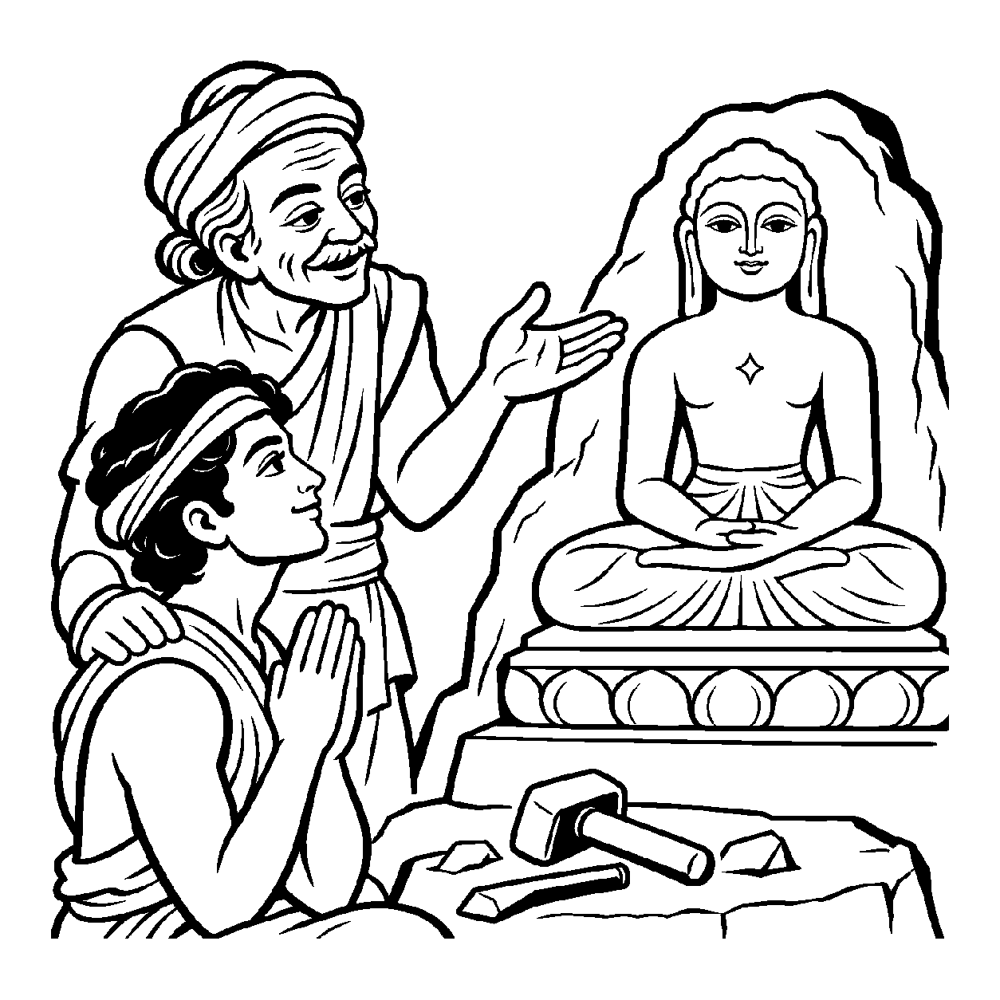

શતરંજના પાટિયા પર કાષ્ઠ કે હાથીદાંતની એક નાની ઘડેલી સોગઠી મૂકવામાં આવે છે. તેના પર કોઈ મુગટ નથી કે નથી કોઈ રક્ત-માંસનું શરીર, છતાં બંને ખેલાડીઓ તેને 'રાજા' માને છે અને તે સોગઠીનું રક્ષણ કરવા પોતાના તમામ પ્યાદાં ન્યોછાવર કરી દે છે. તેવી જ રીતે એક શિલ્પી પર્વતમાંથી પાષાણ લાવીને શાંત, ધ્યાનાવસ્થ મુદ્રા કંડારે છે. જ્યારે વિધિપૂર્વક તેમાં વીતરાગ પ્રભુનું સ્થાપન કરવામાં આવે છે, ત્યારે ભક્તો તે પ્રતિમામાં પ્રભુના ગુણોનું સ્મરણ કરે છે; પથ્થર પુદ્ગલ જ રહે છે અને જીવદ્રવ્યમાં પરિવર્તિત થતો નથી. કોઈ પદાર્થમાં તે પદાર્થ ન હોવા છતાં, સાધના કે વ્યવહારના ઉદ્દેશ્યથી તેના ગુણોનો આરોપ કરીને તેને તે સ્વરૂપ માનતો દ્રષ્ટિકોણ એટલે 'સ્થાપનાનય'.
અરૂપી, અતીન્દ્રિય અને અગોચર આત્માને સાધનાના પ્રારંભે પકડવો કઠિન છે. તેથી સાધક શુદ્ધ મૂર્તિ, ચિત્ર કે આ દેહરૂપ મંદિરમાં ચૈતન્ય પરમાત્માની ભાવના સ્થાપે છે. સ્થાપનાનય કેવળ જડ આકારને પૂજવાનું નથી કહેતો, પરંતુ જડ આકારના નિમિત્તે અંતરમાં છુપાયેલા શુદ્ધ ચૈતન્ય ગુણોને પ્રગટાવવાનું પરમ આલંબન પૂરું પાડે છે.
આ નય સાધકને બાહ્ય આલંબનથી શરૂ કરાવી છેવટે અંતરના નિરાકાર પરમાત્મામાં સમાવી દે છે.
પાષાણે પ્રભુ સ્થાપિયા, પ્રગટે શ્રદ્ધા પૂર;
સ્થાપના નયના ભાવથી, થાય અવિદ્યા દૂર.
પ્રતીક આલંબન બન્યું, અંતર જ્યોતિ થાય;
ભાવ સ્થાપના જે કરે, પરમ પદે સમાય.
સાધકને બાહ્ય આલંબનથી શરૂ કરાવી છેવટે અંતરના નિરાકાર પરમાત્મામાં સમાવી દે છે.

વિજયગઢના એક વૃદ્ધ શિલ્પી માધવે આરસપહાણના એક સુંદર પથ્થરમાંથી અતિ સૌમ્ય, ધ્યાનસ્થ મુદ્રાવાળી મૂર્તિ ઘડી કાઢી હતી. નગરમાં ઉત્સવ હતો અને સૌ લોકો તે શિલ્પના વખાણ કરતા હતા. પરંતુ શિલ્પીનો યુવાન પુત્ર કલ્પેશ વિચારમાં પડ્યો હતો. તે પિતા પાસે આવીને બોલ્યો: "પિતાજી! આ મૂર્તિ તો ગઈકાલ સુધી એક જડ પથ્થર હતી, જેને તમે છીણી-હથોડીથી ઘડી છે. હવે ગામના લોકો તેને પગે લાગશે અને પ્રભુ કહેશે! આ કેવળ પથ્થર જ છે તો લોકો તેને સાક્ષાત્ ભગવાન કેમ માને છે? શું પથ્થર કદી પરમાત્મા બની શકે?" કલ્પેશના અંતરમાં સત્ય અને પ્રતીક વચ્ચેના ભેદને જાણવાની ગહન તરસ હતી.
પિતા માધવે સ્મિત વેરતાં કલ્પેશના ખભા પર હાથ મૂક્યો અને કહ્યું: "બેટા! તારી આંખો માત્ર પથ્થરને જુએ છે, પણ ભક્તનું હૃદય સ્થાપનાનયની દ્રષ્ટિએ જુએ છે. જેમ કાગળ પર લખાયેલી ચિઠ્ઠીમાં કાગળ મહત્ત્વનો નથી પણ તેના પર લખાયેલો પિતાનો પ્રેમ મહત્ત્વનો છે; તેમ આ પાષાણ પર સ્થાપિત થયેલી શાંતિ, ક્ષમા અને વીતરાગતા મહત્ત્વની છે! જ્યારે કોઈ સાધક આ મુદ્રા સામે બેસે છે, ત્યારે તે પથ્થરને નથી પૂજતો, પણ પથ્થરના દર્પણમાં પોતાના જ આત્માની પરમ શાંતિનું પ્રતિબિંબ જુએ છે. આ સ્થાપના એક સેતુ છે, જે સાધકને જડમાંથી ચેતનમાં લઈ જાય છે." કલ્પેશને રહસ્ય સમજાઈ ગયું. તેણે પ્રતીકની પાછળ છુપાયેલા ભાવને નમન કર્યું અને તેનું મન મહામૌનમાં અંતર્લીન થઈ ગયું.
જો જીવ કેવળ બાહ્ય પ્રતીક કે આકારને જ પૂર્ણ સત્ય માની લે અને અંતરના શુદ્ધ ચૈતન્યભાવને કદી ન ઓળખે, તો તે કેવળ બાહ્યાડંબરમાં અટવાઈ જાય છે. શબ્દો કે વ્યાકરણના બાહ્ય નિયમોમાં જ અટવાઈ રહેવાથી અંતરંગ ભાવશુદ્ધિ ખોવાઈ જાય છે અને જીવ શુષ્ક વાદવિવાદ કે જડ ક્રિયાજડતામાં સબડતો રહે છે.
આ નય પ્રતીકના આલંબન દ્વારા અંતર્ગત વીતરાગ ગુણોને જગાડી સાધકને પોતાના શુદ્ધ સ્વરૂપ તરફ દોરે છે, જેથી તે પરમ વિશ્રામ પામે છે. તે વાણી અને સંજ્ઞાઓને આત્મજ્ઞાનનું સાધન બનાવી સાધકને નિર્વિકલ્પ અનુભૂતિ તરફ દોરી જાય છે, જેથી ચેતના પોતાના આત્મસ્વરૂપમાં સ્થિર થઈ શાંતિ અનુભવે છે.